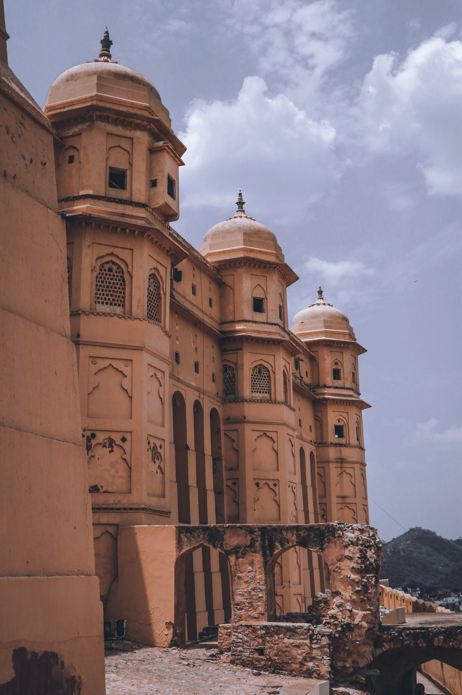

TOP RECCOMENDATIONS



The city of victors at your service
Rich heritage and culture at your door
HAWA MAHAL
The renowned 'Palace Of The Winds', or Hawa Mahal, is one of the prominent tourist attractions in Jaipur city. Located in the heart of Jaipur, this beautiful five-storey palace was constructed in 1799 by Maharaja Sawai Pratap Singh who belonged to Kachhwaha Rajput dynasty. The main architect of this palace built of red and pink sandstone, is Lal Chand Ustad and the palace is believed to have been constructed in the form of the crown of Krishna, the Hindu god. Considered as an embodiment of Rajputana architecture, the main highlight of Hawa Mahal is its pyramid shape and its 953 windows or 'Jharokhas' which are decorated with intricate designs. The main intention behind the construction of the Mahal was to facilitate the royal women and provide them a view of everyday life through the windows, as they never appeared in public.
AMBER FORT
The Amer Fort, situated in Amber, 11 kilometers from Jaipur, is one of the most famous forts of Rajasthan. Amer, originally, was the capital of the state before Jaipur. It is an old fort, built in 1592 by Raja Man Singh. This fort is also very popularly known as the Amer Palace. The Amer Fort was built in red sandstone and marble and the Maotha Lake adds a certain charm to the entire Fort. Though the fort is quite old and may even look so from the outside, it is beautiful on the inside and boasts of various buildings of prominence like the 'Diwan-i-Aam', the 'Sheesh Mahal' and even the 'Sukh Mahal'. The Amer Fort has influences of both Hindu and Muslim architecture. This fort also has the 'Shila Devi' Temple and the 'Ganesh Pol' which is a gate that leads to the private palaces of the kings. The Amer Fort has many pavilions and halls of great interest and other popular attractions.

NAHARGARH FORT
Nahargarh Fort sits proudly on a ridge of the Aravalli Hills, creating an impressive northern backdrop to the city of Jaipur. It was constructed during the reign of Jai Singh in 1734, and was later expanded in 1868. Nahargarh, which means abode of tigers, was a formidable barrier, defending Jaipur against attacking enemies. Within its walls, the fort houses Madhavendra Bhawan, the summer destination for the members of the royal family. Built by Sawai Madho Singh, the palace has 12 matching boudoirs for the queens, at the head of which is a suite for the king. They are all connected by corridors decorated with delicate murals. Even today the palace is a favoured spot for local picnickers. The fort looks brilliant when floodlit at night. Overlooking the city, it presents a glittering view of the city lights.